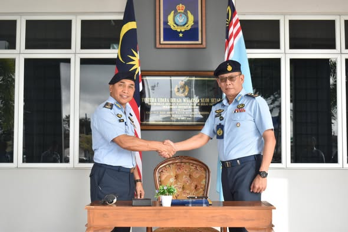
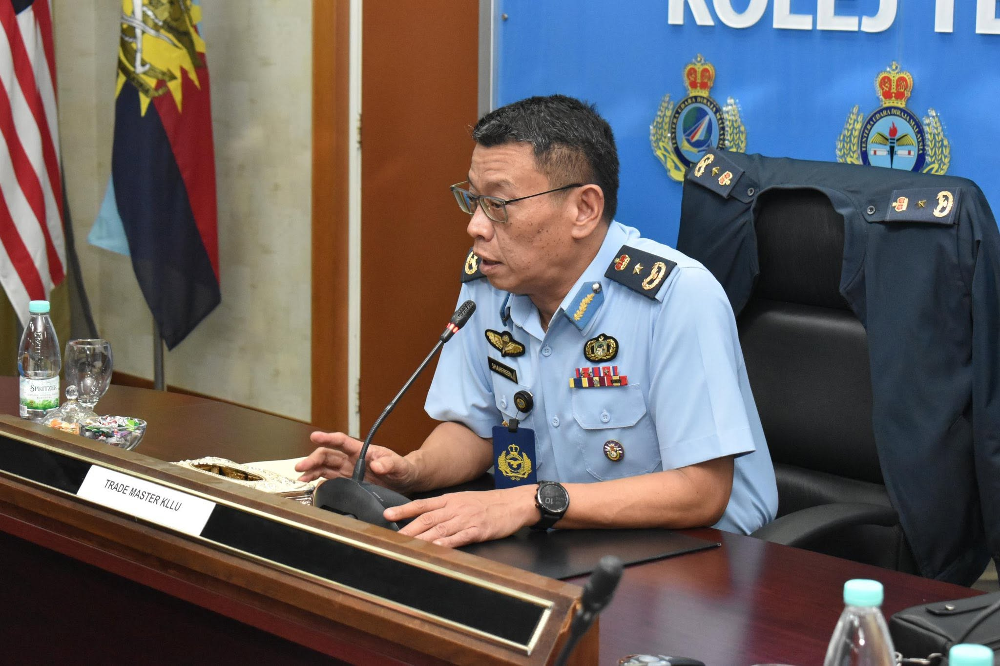
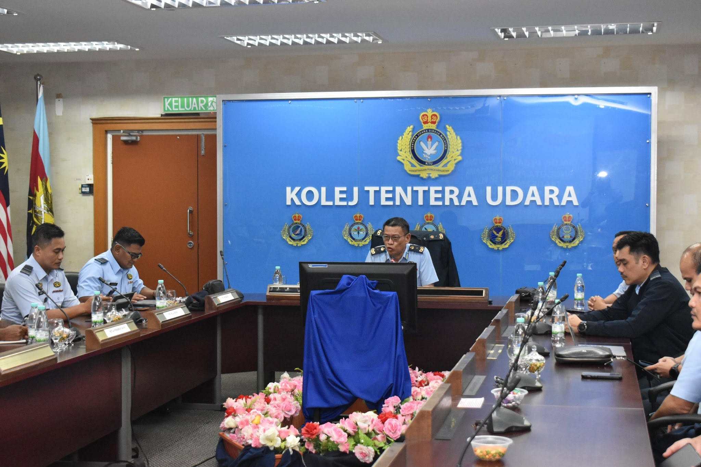
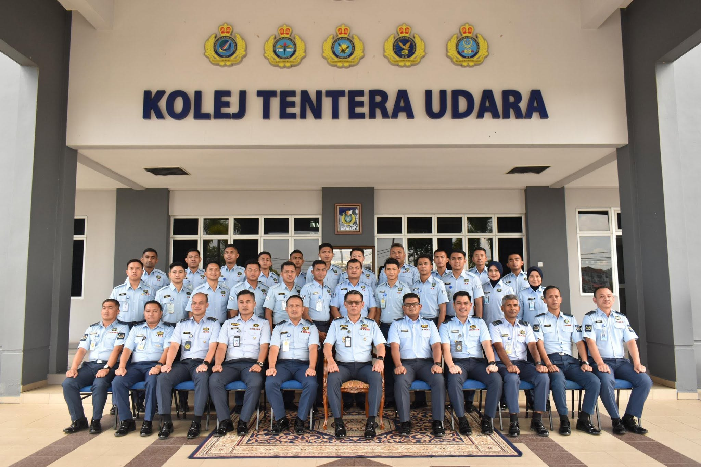

Delegasi yang hadir terdiri daripada PS 2 Rancang LLP Sistem Darat, PS 2 Sistem Darat, PS 2 Prosedur dan PS 2 Pemeriksa KLLU.

KUNJUNGAN HORMAT KE KOLEJ TENTERA UDARA
Ketibaan Trade Master KLLU telah disambut oleh Ketua Cawangan Operasi (KCO) Lt Kol Murad bin Mahmud TUDM seterusnya membuat Kunjungan Hormat ke atas Komandan Kolej, Brig Jen Azman bin Taib TUDM dan menandatangani buku lawatan di Bangunan Markas Kolej.
KUNJUNGAN HORMAT
Kunjungan hormat dan sesi menandatangani buku lawatan menjadi sebahagian daripada pengisian lawatan Trade Master KLLU ke Kolej Tentera Udara, Alor Setar.

SESI DIALOG DAN PERKONGSIAN BUAH FIKIRAN
Trade Master KLLU telah mengadakan sesi dialog dan bertukar buah fikiran bersama Pegawai KLLU dan Anggota PKTU bertempat di Bilik Mesyuarat Kolej.
Sesi ini menjadi platform bagi perkongsian pandangan, pengalaman serta isu-isu berkaitan bidang kawalan lalu lintas udara dan peranan anggota dalam menyokong kelancaran operasi penerbangan.

TAKLIMAT PENGOPERASIAN LAPANGAN TERBANG ALOR SETAR
Selain itu, KCO turut menyampaikan taklimat pengoperasian lapangan terbang Alor Setar diikuti PS 2 Pemeriksa KLLU yang membentangkan inisiatif pembangunan laman web KLLU.
Taklimat dan pembentangan tersebut memberi gambaran mengenai pengoperasian lapangan terbang serta usaha memperkukuhkan penyampaian maklumat dan keupayaan digital dalam bidang Kawalan Lalu Lintas Udara.
LAWATAN KE BILIK OPERASI DAN GDOC
Dialog diakhiri dengan lawatan dan taklimat ringkas mengenai pengoperasian Cawangan Operasi kepada Trade Master KLLU dan delegasi di Bilik Operasi Pangkalan dan juga Ground Defence Operation Centre (GDOC).

MEMPERKUKUH KERJASAMA DAN KEUPAYAAN KLLU
Pelaksanaan dialog ini mencerminkan usaha berterusan Trade Master KLLU dalam memperkukuhkan hubungan, perkongsian pengetahuan dan kefahaman bersama Pegawai KLLU serta Anggota PKTU, khususnya dalam aspek pengoperasian dan pembangunan keupayaan kawalan trafik udara.
Program seperti ini turut menjadi platform penting bagi memperkasakan komunikasi, pertukaran pengalaman serta kerjasama dalam kalangan warga KLLU dan PKTU demi menyokong keperluan operasi semasa dan masa hadapan.
Air Traffic Control • TUDM • KLLU